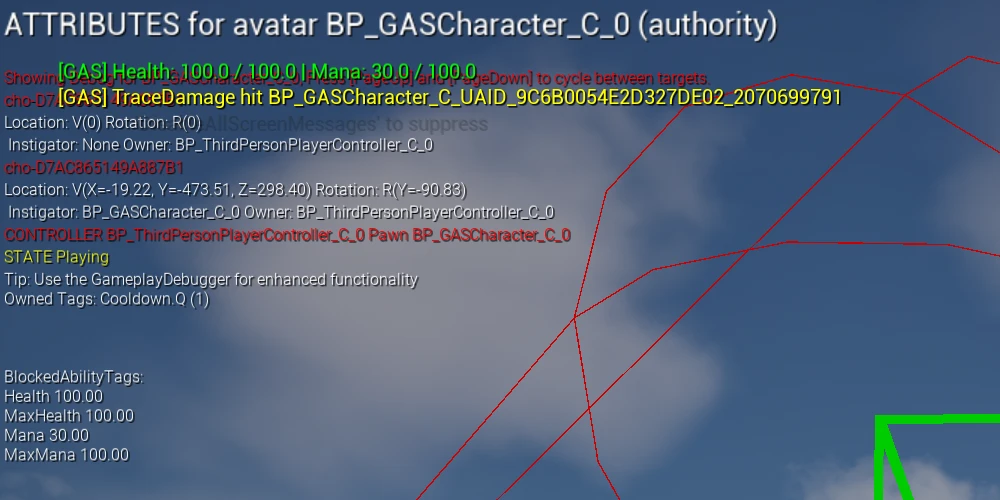
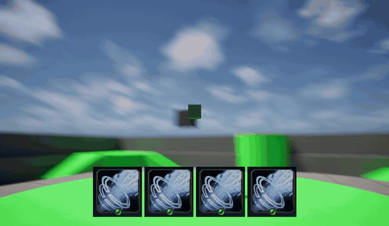

GASPractice
LoL식 QWER 스킬 구조를 Gameplay Ability System (스킬 · 효과 · 상태를 엔진이 정한 틀로 다루는 언리얼 기능)으로 재현하고, 그 위에 CommonUI 레이어 프레임워크와 게임패드 조작을 얹은 학습 프로젝트입니다.
- 종류
- 학습용 개인 프로젝트
- 엔진 · 언어
- Unreal Engine 5.6 · C++
- 규모
- 개인
무엇을 익히려 했나
스킬 시스템을 캐릭터 클래스에 직접 구현하면 스킬이 늘어날수록 캐릭터가 비대해지고, 쿨다운·자원 소모·상태이상 같은 공통 규칙이 스킬마다 중복됩니다. GAS가 그걸 어떻게 나누는지 손으로 확인하는 것이 목표였습니다.
핵심은 스킬이 체력을 직접 깎지 않는다는 점입니다.
스킬은 “이 효과를 걸어라”(GameplayEffect)까지만 하고,
실제로 수치를 바꾸는 것은 그 수치를 들고 있는 쪽(AttributeSet)입니다.
그래서 밸런스를 맞출 때 코드가 아니라 데이터 파일을 고칩니다.
어빌리티 · 이펙트 · 태그 세 축으로 분리
무엇을 하는가 / 무엇이 변하는가 / 지금 어떤 상태인가
구현
GameplayAbility— 무엇을 하는가(스킬 한 개).GASTraceDamageAbility가 앞쪽으로 선을 쏘아 맞은 대상을 찾습니다.(이즈리얼 q의 모작)GameplayEffect— 무엇이 변하는가(수치를 바꾸는 데이터). 피해량 · 마나 비용 · 쿨다운을 서로 다른 GE 셋으로 갈라 뒀습니다.GameplayTag— 지금 어떤 상태인가(붙였다 떼는 이름표).State.Stunned,Cooldown.Q가 붙어 있으면 스킬이 발동하지 않습니다.
화면
Source/GASPractice/ ├─ GASCharacter 250줄 ASC 소유, 어트리뷰트 초기화, QWER 입력 바인딩 ├─ GASPlayerAttributeSet 74줄 Health/Mana 어트리뷰트, 변경 클램프 ├─ GASTraceDamageAbility 182줄 트레이스 판정 후 GameplayEffect 적용 └─ GASTestDamageAbility 58줄 GAS 흐름 검증용 자기 피해 스킬 ─────
파일 구성스킬을 하나 더 붙일 때 새로 만드는 클래스는
GameplayAbility 하나뿐이고, 캐릭터와 어트리뷰트 파일은 그대로입니다.
성과
어트리뷰트 클램프
체력·마나가 0 아래로 내려가거나 최대치를 넘지 않도록, 값이 바뀌는 두 지점에서 값을 clamp합니다.
구현
Health/MaxHealth/Mana/MaxMana네 개를 정의했습니다. 그런데 GAS의 어트리뷰트는 값을 두 개 갖습니다 — 화면에 보이는CurrentValue와 바탕이 되는BaseValue. 둘을 고칠 수 있는 자리가 서로 달라서, 두 곳에서 다 clamp합니다.PreAttributeChange— 값이 바뀌기 직전에 어느 경로로 들어오든 불립니다. 들어오려는 값을 0~Max로 잘라서 돌려보내,CurrentValue(지금 화면에 보이는 값)가 범위를 벗어나지 않게 합니다.PostGameplayEffectExecute— Instant GE(한 번에 딱 적용되는 효과)가 실행된 뒤에 불립니다.BaseValue(바탕이 되는 원래 값)를 자르고, 최대 체력이 줄었으면 현재 체력도 그만큼 내립니다. 사망 판정도 여기서 합니다.- 둘이 지키는 것은 경로가 아니라 값입니다.
PreAttributeChange만 쓰면 Instant GE가 밀어 넣은BaseValue가 음수로 남아, 화면에는 0인데 회복이 안 먹는 상태가 됩니다.
화면
// 두 훅이 잡는 경로가 다르다 Instant GE 실행 ──────────────▶ PostGameplayEffectExecute ✔ Duration / Infinite GE ──▶ PreAttributeChange ✔ 직접 Setter ──▶ PreAttributeChange ✔ // 하나만 쓰면 PreAttributeChange 만 → GE 실행 결과를 놓친다 PostGameplayEffectExecute 만 → Duration/Infinite GE와 Setter 경로를 놓친다
적용 경로겹쳐서 막는 게 아닙니다.
PreAttributeChange는 CurrentValue를,
PostGameplayEffectExecute는 BaseValue를 맡습니다.
성과
쿨다운을 타이머가 아니라 태그로
조건문으로 막는것이 아닌 태그의 유무로 쿨다운을 컨트롤합니다.
구현
- 쿨다운을 캐릭터의 타이머 변수가 아니라
Cooldown.Q같은 태그의 존재 여부로 표현했습니다. - 쿨다운 GE가 적용되는 동안 그 태그가 붙어 있고, 어빌리티는 해당 태그가 있으면 활성화되지 않습니다.
- 기절 같은 상태이상도 같은 방식입니다 —
State.Stunned가 붙어 있으면 타 스킬 발동이 막힙니다.
화면

showdebug abilitysystem으로 띄운 화면입니다.
Q를 쓴 직후라 Owned Tags에 Cooldown.Q가 붙어 있고, 이 태그가 있는 동안 같은 어빌리티는 발동하지 않습니다.
성과
CommonUI 레이어 프레임워크 — 창이 늘어도 겹치는 순서를 코드가 외우지 않게
어느 창이 위에 있는지를 코드가 기억하지 않고 레이어 배치로 결정.
구현
- 창을 화면에 그냥 붙이면 먼저 붙인 게 아래, 나중이 위가 됩니다. 그러면 그때부터 “설정 창이 인벤토리보다 위인가”를 코드가 기억해야 합니다. 화면이 늘수록 그 기억이 틀리기 시작합니다.
- 레이어를 Game / GameMenu / Menu / Modal 넷으로 미리 고정했습니다. 각 층은 자기 안에서만 창이 쌓이고, 레이어끼리의 위아래는 블루프린트 배치가 한 번 정합니다.
- 레이어 키를
enum이 아니라FGameplayTag로 두고 에셋쪽에서 늘어나게 했습니다. enum로 두면 층을 하나 추가할 때마다 그 목록을 쓰는 파일이 전부 다시 빌드됩니다. 언리얼은 빌드가 무거워서 이게 시간낭비라고 판단했습니다. PopWidget()은 레이어 태그를 받지 않습니다. 받게 하면 띄운 쪽과 닫는 쪽이 레이어 이름을 서로 맞춰 들고 있어야 하고, 나중에 한 쪽이 화면을 다른 레이어로 옮기면 반대쪽이 실패합니다. 위젯들을 인자로 받고 위젯 전체를 순환하여 오류를 방지했습니다.- 이 구조는 에픽의 Lyra가 CommonUI를 사용한 방식과 같은 계열입니다.
화면
// 레이어 넷을 고정하면 "누가 위인가" 판단이 사라진다 Modal 확인 팝업. 무조건 최상단 Menu 인벤토리 · 설정. 게임 화면을 완전히 덮는다 GameMenu 게임 위에 겹치는 UI. 퀵슬롯, 상호작용 프롬프트 Game HUD. 항상 깔려 있다 // 화면을 새로 만드는 사람이 답할 것은 하나뿐이다 — "이건 어느 레이어인가" PushWidgetToLayer(TAG_UI_Layer_Modal, WBP_ConfirmDialog); PopWidget(Widget); // 어느 레이어인지 호출부가 몰라도 된다
층을 미리 정해두면“설정 창이 인벤토리보다 위인가”를 따질 일이 없어집니다 — 둘 다 Menu 레이어에 들어가 나중 것이 위라는 스택 규칙만 따르면 되기 때문입니다.
성과
게임패드 내비게이션
“지금 UI가 입력을 먹는 중인가”를 아무도 기억하지 않습니다.
구현
- 화면마다
SetInputMode를 부르면 팝업이 겹치는 순간 문제가 생깁니다. 팝업을 닫을 때GameOnly로 되돌리면 아래 메뉴가 아직 떠 있는데 캐릭터가 움직입니다. 그래서 보통 ui 카운터를 세지만 , 그 카운터가 어긋나는 버그가 종종 생깁니다. - 화면마다 UIOnly , GameOnly 등을 미리 선언하게 했습니다. 창이 열리고 닫힐 때마다 엔진이 맨 위 창에 적힌 값을 알아서 적용합니다.
- 게임패드에는 마우스 커서가 없어서, 창이 뜰 때 “처음 선택될 버튼”을 정해주지 않으면 스틱을 아무리 밀어도 아무 일이 없습니다. 그래서 창을 만들 때 그걸 빠뜨리면 경고가 뜨도록 해뒀습니다.
- 하단 액션 바(
CommonBoundActionBar)를 붙여 입력 방식에 따라 힌트가 바뀌게 했습니다. 패드를 쥐면Ⓑ 취소, 마우스를 만지면Esc 취소로 바뀝니다.
화면

스택 최상단 화면의 선언이 그때그때 적용됩니다.
// 실행 로그 — 아무도 SetInputMode를 부르지 않았다 Applying input config for leaf-most node [WBP_PauseMenu_C_0] InputMode: Previous (Game), New (Menu) ← 메뉴 열림, 캐릭터 정지 [User 0] Focused desired target 계속하기 ← 패드 포커스 자동 지정 Applying input config for leaf-most node [WBP_ConfirmDialog_C_0] [User 0] Focused desired target WBP_MenuButton_1 ← 팝업이 떠도 모드 변경 로그가 없다 [WBP_PauseMenu_C_0] handled back with default implementation Applying input config for leaf-most node [WBP_HUD_C_0] InputMode: Previous (Menu), New (Game) ← 메뉴까지 닫혀야 조작 복귀
가운데 두 줄이 핵심확인 팝업이 최상단이 됐는데 모드 변경 로그가 찍히지 않습니다. 팝업이 입력 모드에 관여하지 않도록 선언해 둔 결과입니다.
성과
쿨다운 링 — UMG와 Slate 두 계층으로 나눠 만들기
도형 하나 때문에 위젯을 늘리거나 머티리얼을 만들지 않았습니다.
구현
- UMG만으로 원형 게이지를 만들면 Image를 여러 장 배치하거나 머티리얼에 파라미터를 넘겨야 합니다. 전자는 위젯 수가 늘고, 후자는 이 도형 하나 때문에 머티리얼 에셋이 생깁니다.
- 그래서 한 계층 아래(Slate)로 내려가 호를 직접 그렸습니다 (
SGASCooldownRing). 원 위의 점들을 계산해 선으로 잇는 것이라, 위젯 하나에 그리기 한 번으로 끝납니다. - 진행도는 슬롯 위젯이
NativeTick에서 넣어주되, 쿨다운이 도는 동안에만 갱신합니다. 슬롯이 넷이어도 놀고 있는 슬롯은 아무 비용이 없습니다. 값을TAttribute로 받게 해둬서, 나중에 델리게이트를 걸어 “그릴 때 읽어가는” 방식으로 바꿀 여지는 남겼습니다. - 다만 그렇게 만든 위젯은 에디터에서 끌어다 놓을 수가 없습니다.
그래서 에디터가 다룰 수 있는 껍데기(
UGASCooldownRingWidget)를 한 겹 씌워, 다른 화면에서도 팔레트에서 끌어다 쓰는 부품이 되게 했습니다. - 남은 시간은 UI가 따로 세지 않고 GE의 쿨다운을 매 틱 물어봅니다. UI가 자기 타이머를 돌리면 일시정지 · 배속 · 재접속에서 실 타이머와 어긋날 수 있습니다.
화면
// UObject 계층과 Slate 계층이 갈리는 지점 UGASSkillSlotButton (CommonButtonBase) 쿨다운 상태를 알고 비율을 넘긴다 │ SetProgress(0.62) ▼ UGASCooldownRingWidget (UWidget) ← UObject. 에디터가 편집, GC가 관리 │ 아무것도 그리지 않는다 │ RebuildWidget() / SynchronizeProperties() / ReleaseSlateResources() ▼ SGASCooldownRing (SWidget) ← UObject가 아니다. TSharedPtr로 산다 OnPaint에서 실제로 그린다 // SWidget은 GC가 모른다 — 손으로 놓지 않으면 UMG가 사라져도 살아남는다 void UGASCooldownRingWidget::ReleaseSlateResources(bool bReleaseChildren) { Super::ReleaseSlateResources(bReleaseChildren); MyCooldownRing.Reset(); }
두 계층위 두 칸은 에디터가 다루는 설계도일 뿐 아무것도 그리지 않고, 맨 아래 한 칸만 실제로 그립니다. 가운데 래퍼가 있는 이유는 Slate 위젯을 디자이너에서 쓸 수 있게 만들기 위해서입니다.
성과
트러블슈팅
막혔던 지점을 문제 · 원인 · 해결 순으로 적었습니다.
어려움
기능 01 — 어빌리티 · 이펙트 · 태그 세 축으로 분리
- 문제
- 처음에는 스킬 로직을 캐릭터 클래스에 직접 넣었습니다. 스킬이 넷으로 늘자 쿨다운·마나 검사·피해 계산이 스킬마다 똑같이 복제됐습니다.
- 원인
- “무엇을 하는가”와 “무엇이 변하는가”를 한 곳에서 처리했기 때문입니다. 공통 규칙이 있어도 붙일 자리가 없었습니다.
- 해결
- 어빌리티가 수치를 직접 건드리지 않게 하고 GE 적용만 하도록 바꿨습니다. 그러자 피해량·비용·쿨다운이 데이터가 되고, 밸런스 조정이 코드 수정에서 에셋 수정으로 내려갔습니다.
어려움
기능 02 — 어트리뷰트 클램프 — 두 경로를 다 막다
- 문제
- 체력을 0~Max로 제한했는데도 어떤 경로로는 범위를 벗어난 값이 들어왔습니다.
- 원인
- GAS에서 어트리뷰트가 바뀌는 경로가 하나가 아니었습니다. Instant GE는 즉시 실행되고, Duration/Infinite GE는 지속 중 계속 값을 밀며, 코드에서 직접 Setter를 호출할 수도 있었습니다. 훅 하나로는 이 셋을 다 잡지 못했습니다.
- 해결
- 두 훅을 역할을 나눠 함께 썼습니다.
PreAttributeChange는 값의 유효성 보정,PostGameplayEffectExecute는 GE 실행 결과의 클램프와 사망 판정에 사용했습니다.
어려움
기능 03 — 쿨다운을 타이머가 아니라 태그로
- 문제
- 상태를 캐릭터가 직접 들고 관리하는 방식(FSM)에서는 스킬을 하나 추가할 때마다 캐릭터 클래스에 쿨다운 변수와 조건문이 하나씩 늘었습니다. QWER 넷이면 넷이고, 여기에 기절·침묵 같은 상태가 붙으면 따져야 할 조합이 또 늘어납니다.
- 원인
- “지금 쓸 수 있는가”를 캐릭터가 들고 있는 값들의 조합으로 판단했기 때문입니다. 조건이 늘면 판단 코드도 같이 늘어납니다.
- 해결
- 상태를 태그의 유무로 바꿨습니다. 어빌리티마다 “이 태그가 있으면 못 쓴다”만 선언해두면, 쿨다운이든 기절이든 침묵이든 같은 메커니즘으로 처리할 수 있습니다.
어려움
기능 05 — 확인 팝업이 두 번째부터 뜨지 않음
- 문제
- 확인 팝업이 처음 한 번은 정상적으로 뜨는데, 닫은 뒤 다시 열면 아무것도 나오지 않았습니다. 버튼 클릭 로그는 매번 찍혀 입력은 정상적으로 도달하고 있었습니다.
- 원인
- CommonUI 컨테이너는 위젯을 풀에 반납했다가 재사용합니다. 팝업에 “비활성화될 때
Collapsed”만 설정하고 “활성화될 때 되돌리기”를 빠뜨려, 재사용된 인스턴스가Collapsed인 채로 활성화됐습니다. 새로 만든 인스턴스는 기본 가시성을 갖고 있어 처음 한 번만 정상 동작한 것입니다. - 해결
- 엔진 로그를
VeryVerbose로 올려 컨테이너 내부를 확인했습니다. 정상 동작하는 일시정지 메뉴에는set visibility to [Visible] on activation줄이 있는데 팝업에만 그 줄이 없다는 대조가 답이었습니다. 짝이 되는 설정을 켜자 인스턴스가 재사용되어도 정상 표시됐습니다. 풀링이 있는 UI 프레임워크에서는 비활성화에서 바꾼 상태를 활성화에서 되돌려야 한다는 것을 배웠습니다.
어려움
기능 05 — 액션 바에 아무것도 표시되지 않음
- 문제
- 하단 액션 바를 배치하고 버튼 클래스까지 지정했는데 화면에 아무것도 뜨지 않았습니다. 에러도 경고도 없었습니다.
- 원인
- 원인이 네 겹이었습니다. ① 액션 바 표시는 바인딩마다 기본이 꺼짐이라 화면별로 켜야 합니다. ② 데이터 테이블의 해당 행에 게임패드 키가 비어 있어 패드 사용 중에는 전부 걸러졌습니다. ③ 언리얼은 키 아이콘을 기본 제공하지 않아 키↔이미지 대응표를 직접 만들어야 했습니다. ④ 그 대응표의 패드 이름이 플랫폼 기본값과 달라 조회에서 제외됐습니다.
- 해결
- 엔진의 진단 명령으로 한 겹씩 좁혔습니다. 필터를 무시하는 콘솔 변수로 바 자체가 살아 있는지 먼저 확인하고, 활성 트리 덤프로 바인딩이 등록됐는지 확인한 뒤, 마우스↔패드를 오가며 어느 입력 방식에서 걸리는지를 갈랐습니다. 증상이 하나여도 원인이 여러 겹일 때는 층마다 확인 수단을 따로 두는 것이 빨랐습니다.
UI 세 기능을 관통하는 한 문장
“답을 아는 쪽에 물어보고, 사본을 만들지 않는다.” 세 기능은 서로 다른 문제를 풀지만 판단은 하나였습니다 — 이미 답을 아는 쪽이 있는데 그 값을 코드가 따로 들고 있으면, 언젠가 두 값이 어긋납니다.
| 무엇을 | 누가 이미 알고 있나 | 그래서 코드가 안 하는 일 |
|---|---|---|
| 어느 창이 위인가 | 레이어 배치 | 띄우는 코드마다 순서를 기억 |
| 지금 몇 장 떠 있나 | 레이어 스택 | 카운터 변수를 세는 것 |
| 쿨다운이 몇 초 남았나 | 쿨다운 GE | UI가 자기 타이머를 굴리는 것 |
왜 사본이 문제인가사본은 만드는 순간이 아니라 나중에 어긋납니다. 창을 다른 레이어로 옮겼을 때, 창이 예외로 닫혔을 때, 일시정지 · 배속 · 재접속이 끼었을 때 — 전부 두 값이 다르게 흐르기 시작하는 지점입니다. 그때 나는 버그는 크래시도 로그도 없이 화면만 조용히 틀립니다. 그래서 성능을 조금 내주더라도(레이어 넷 순회, 매 틱 조회) 틀릴 수 있는 자리 자체를 없애는 쪽을 택했습니다.